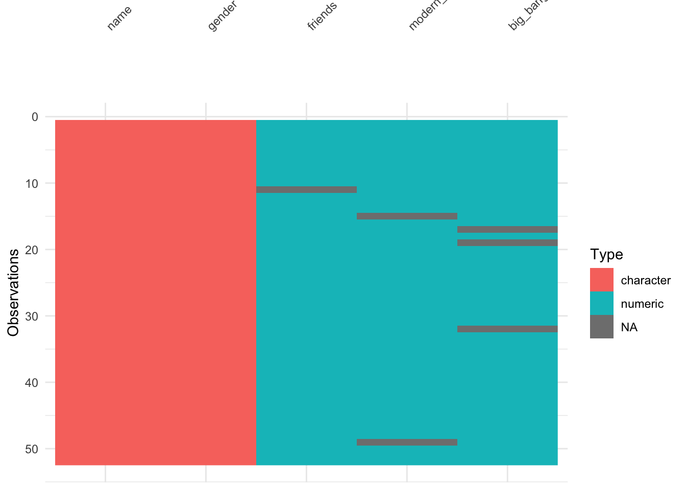
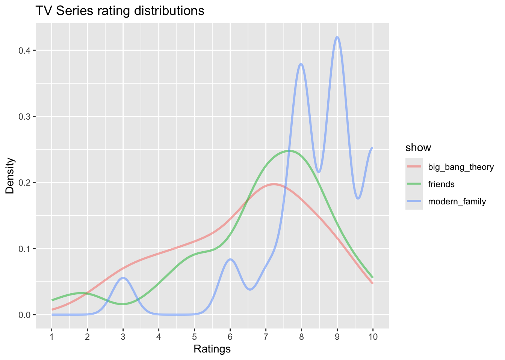
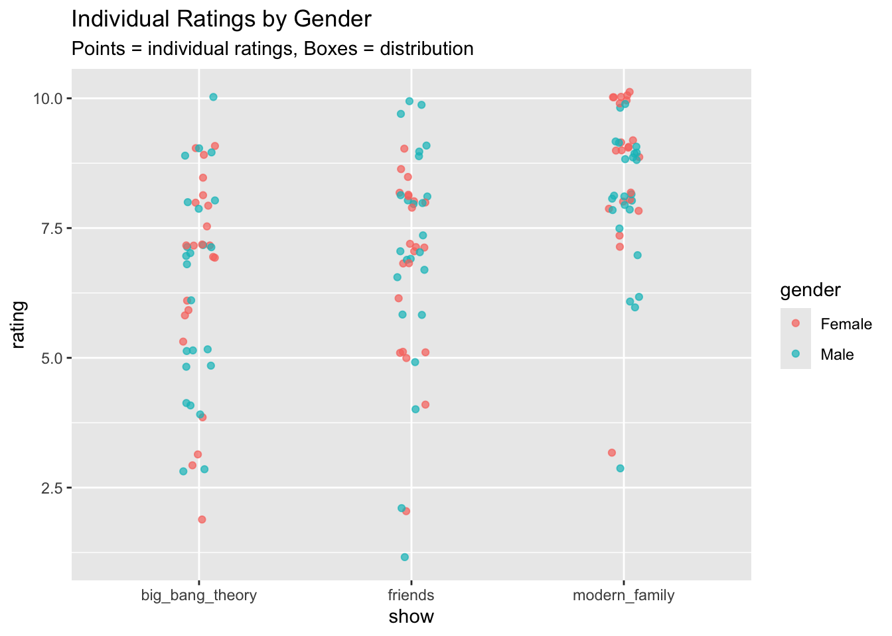
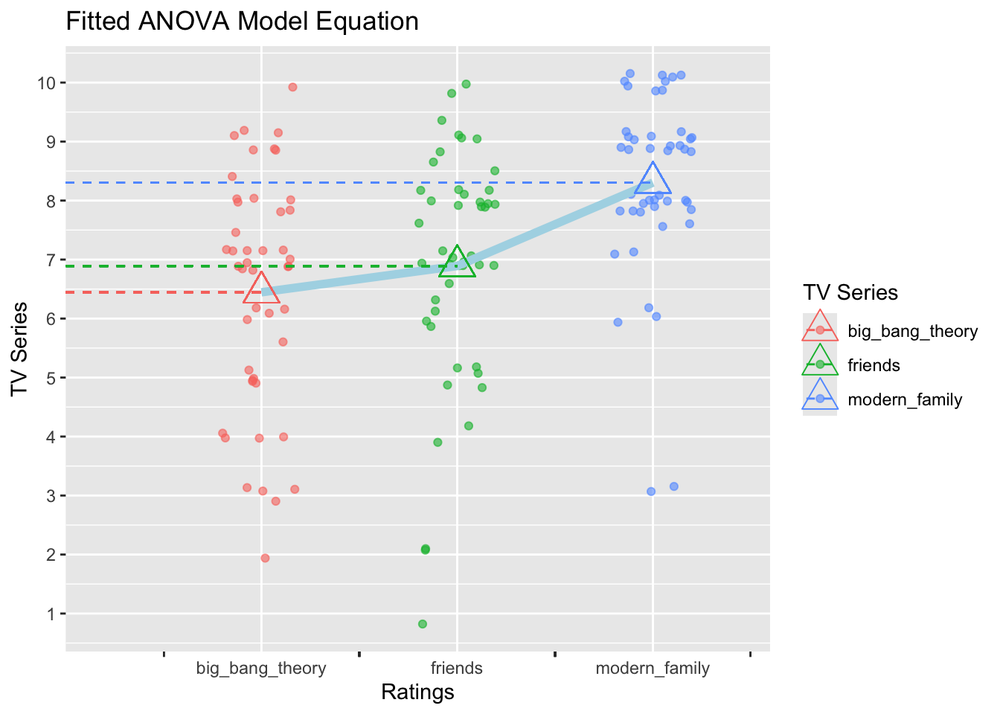

── Attaching core tidyverse packages ──────────────────────── tidyverse 2.0.0 ──
✔ dplyr 1.1.4 ✔ purrr 1.1.0
✔ forcats 1.0.0 ✔ stringr 1.5.2
✔ ggplot2 4.0.0 ✔ tibble 3.3.0
✔ lubridate 1.9.4 ✔ tidyr 1.3.1
── Conflicts ────────────────────────────────────────── tidyverse_conflicts() ──
✖ dplyr::filter() masks stats::filter()
✖ dplyr::lag() masks stats::lag()
ℹ Use the conflicted package (<http://conflicted.r-lib.org/>) to force all conflicts to become errors
Loading required package: scales
Attaching package: 'scales'
The following object is masked from 'package:purrr':
discard
The following object is masked from 'package:readr':
col_factor
Loading required package: ggridges
New to ggformula? Try the tutorials:
learnr::run_tutorial("introduction", package = "ggformula")
learnr::run_tutorial("refining", package = "ggformula")
Registered S3 method overwritten by 'mosaic':
method from
fortify.SpatialPolygonsDataFrame ggplot2
The 'mosaic' package masks several functions from core packages in order to add
additional features. The original behavior of these functions should not be affected by this.
Attaching package: 'mosaic'
The following object is masked from 'package:Matrix':
mean
The following object is masked from 'package:scales':
rescale
The following objects are masked from 'package:dplyr':
count, do, tally
The following object is masked from 'package:purrr':
cross
The following object is masked from 'package:ggplot2':
stat
The following objects are masked from 'package:stats':
binom.test, cor, cor.test, cov, fivenum, IQR, median, prop.test,
quantile, sd, t.test, var
The following objects are masked from 'package:base':
max, mean, min, prod, range, sample, sum
Attaching package: 'skimr'
The following object is masked from 'package:mosaic':
n_missing
Attaching package: 'naniar'
The following object is masked from 'package:skimr':
n_complete
Attaching package: 'janitor'
The following objects are masked from 'package:stats':
chisq.test, fisher.test
Attaching package: 'tinytable'
The following object is masked from 'package:ggplot2':
theme_void
Attaching package: 'crosstable'
The following object is masked from 'package:purrr':
compact
Attaching package: 'supernova'
The following object is masked from 'package:scales':
numberTV Series Rating

About the Data
This data set is derived from the peasants of Manipal University to analyse the ratings of classic TV series - Friends, Modern Family, and Big Bang Theory
Data Dictionary
- Qualitative Variables
-
Name: Name of the student
-
Gender: Gender of the students categorized as ‘Male’ & ‘Female’
-
Friends: Rating of the ‘Friends’ TV show
-
Modern Family: Rating of the ‘Modern Family’ TV show
-
Big Bang Theory: Rating of the ‘Big Bang Theory’ TV show
Hypothesis
Will Friends have significantly higher ratings than Big Bang Theory due to broader cultural popularity and peer influence?
Is there a gender bias in the ratings where females might rate Friends higher and males rating Big Bang Theory higher due to its STEM themes?
Modern Family might show the most balanced ratings across genders, reflecting its diverse character appeal.
Setup
Inspecting the Data
tv_series_data <- read_csv("~/Documents/R_work/DataRchive/posts/A3_Ashmita/Datasets/2-tv_series.csv") %>%
janitor::clean_names(case = "snake")Rows: 52 Columns: 5
── Column specification ────────────────────────────────────────────────────────
Delimiter: ","
chr (2): Name, Gender
dbl (3): Friends, Modern Family, Big Bang Theory
ℹ Use `spec()` to retrieve the full column specification for this data.
ℹ Specify the column types or set `show_col_types = FALSE` to quiet this message.tv_series_data# A tibble: 52 × 5
name gender friends modern_family big_bang_theory
<chr> <chr> <dbl> <dbl> <dbl>
1 Diya Female 8 9 9
2 Ihina Female 7 9 6
3 Abhinav Male 8 10 7
4 Nikhita Female 7 9 6
5 Rishi Male 8 6 5
6 Charvi Female 6 9 5.5
7 Maya Female 8 7.5 9
8 Anuva Female 4 8 6
9 Shourya Male 9 8 5
10 sarthak Male 7 9 3
# ℹ 42 more rowsChecking for missing data
tv_series_data %>%
visdat::vis_miss()
tv_series_data %>%
visdat::vis_dat()
Since there are a few missing numeric data, dropping the respective entries
tv_series_mod1 <- tv_series_data %>%
naniar::replace_with_na_all(condition = ~ .x %in% common_na_numbers) %>%
drop_na()
tv_series_mod1# A tibble: 46 × 5
name gender friends modern_family big_bang_theory
<chr> <chr> <dbl> <dbl> <dbl>
1 Diya Female 8 9 9
2 Ihina Female 7 9 6
3 Abhinav Male 8 10 7
4 Nikhita Female 7 9 6
5 Rishi Male 8 6 5
6 Charvi Female 6 9 5.5
7 Maya Female 8 7.5 9
8 Anuva Female 4 8 6
9 Shourya Male 9 8 5
10 sarthak Male 7 9 3
# ℹ 36 more rowsNumber of rows are reduced from 52 to 46, thereby 6 entries are removed
Munging the Data
Factoring gender
tv_series_mod2 <- tv_series_mod1 %>%
mutate(gender = as.factor(gender))Examining the Data
Taking a glimpse of the Data
glimpse(tv_series_mod2)Rows: 46
Columns: 5
$ name <chr> "Diya", "Ihina", "Abhinav", "Nikhita", "Rishi", "Charv…
$ gender <fct> Female, Female, Male, Female, Male, Female, Female, Fe…
$ friends <dbl> 8.0, 7.0, 8.0, 7.0, 8.0, 6.0, 8.0, 4.0, 9.0, 7.0, 8.0,…
$ modern_family <dbl> 9.0, 9.0, 10.0, 9.0, 6.0, 9.0, 7.5, 8.0, 8.0, 9.0, 8.0…
$ big_bang_theory <dbl> 9.0, 6.0, 7.0, 6.0, 5.0, 5.5, 9.0, 6.0, 5.0, 3.0, 7.0,…Counting Gender
tv_series_mod2 %>%
dplyr::count(gender) %>%
tt()| gender | n |
|---|---|
| Female | 22 |
| Male | 24 |
Summarizing the Data
summary(tv_series_mod2) name gender friends modern_family
Length:46 Female:22 Min. : 1.000 Min. : 3.000
Class :character Male :24 1st Qu.: 6.000 1st Qu.: 8.000
Mode :character Median : 7.000 Median : 9.000
Mean : 6.891 Mean : 8.304
3rd Qu.: 8.000 3rd Qu.: 9.000
Max. :10.000 Max. :10.000
big_bang_theory
Min. : 2.000
1st Qu.: 5.000
Median : 7.000
Mean : 6.446
3rd Qu.: 8.000
Max. :10.000 Observation
There is nearly equal gender distribution where, female = 22 and male = 24
We can see that the mean and median for the modern family is the highest, hence has the highest ratings
Friends has wider spread ratings ranging from 1 to 10
Big Bang Theory has more variability with wider quartiles
Restructuring the Data
- Since the data is now in a wide format, transforming it into a wide format and factoring the shows
tv_series_mod3 <- tv_series_mod2 %>%
pivot_longer(
cols = c(friends, modern_family, big_bang_theory),
names_to = "show",
values_to = "rating"
) %>%
mutate(show = as.factor(show))
glimpse(tv_series_mod3)Rows: 138
Columns: 4
$ name <chr> "Diya", "Diya", "Diya", "Ihina", "Ihina", "Ihina", "Abhinav", "…
$ gender <fct> Female, Female, Female, Female, Female, Female, Male, Male, Mal…
$ show <fct> friends, modern_family, big_bang_theory, friends, modern_family…
$ rating <dbl> 8.0, 9.0, 9.0, 7.0, 9.0, 6.0, 8.0, 10.0, 7.0, 7.0, 9.0, 6.0, 8.…Visualizing TV shows rating
tv_series_mod3 %>%
gf_dens(~rating, color = ~show, size = 1, fill = ~show) %>%
gf_labs(title = "TV Series rating distributions",
x = "Ratings",
y = "Density") %>%
gf_refine(
scale_x_continuous(breaks = seq(0, 10, 1))
)Warning: Using `size` aesthetic for lines was deprecated in ggplot2 3.4.0.
ℹ Please use `linewidth` instead.
tv_series_mod3 %>%
gf_boxplot(rating ~ show, fill = ~show, orientation = "x") %>%
gf_labs(title = "Rating Distributions by Show and Gender")
TV shows rating vs. Gender
tv_series_mod3 %>%
gf_jitter(rating ~ show, color = ~gender, width = 0.075, alpha = 0.7) %>%
gf_labs(title = "Individual Ratings by Gender",
subtitle = "Points = individual ratings, Boxes = distribution")
tv_series_mod3 %>%
gf_boxplot(rating ~ show, fill = ~gender, position = "dodge", orientation = "x") %>%
gf_labs(title = "Rating Distributions by Show and Gender")
tv_series_mod2 %>%
select(friends, modern_family, big_bang_theory) %>%
ggpairs(
title = "Do People Rate Shows Similarly?",
lower = list(continuous = wrap("points", alpha = 0.6, size = 2))
)
tv_series_mod3 %>%
gf_histogram(~rating, fill = ~show, bins = 10) %>%
gf_facet_wrap(~ show) %>%
gf_labs(title = "Rating Frequency Distributions")
tv_series_anova <- aov(rating ~ show, data = tv_series_mod3)
tv_series_anovaCall:
aov(formula = rating ~ show, data = tv_series_mod3)
Terms:
show Residuals
Sum of Squares 86.6341 472.8098
Deg. of Freedom 2 135
Residual standard error: 1.871442
Estimated effects may be unbalancedtv_series_supernova <-
supernova::pairwise(tv_series_anova,
correction = "Bonferroni",
alpha = 0.05, # 95% CI calculation
var_equal = TRUE,
plot = T
)
tv_series_supernova$showshowLevels: 3Family-wise error-rate: 0.049
group_1 group_2 diff pooled_se t df lower upper p_adj
<chr> <chr> <dbl> <dbl> <dbl> <int> <dbl> <dbl> <dbl>
1 friends big_bang_theory 0.446 0.276 1.615 135 -0.148 1.039 .3259
2 modern_family big_bang_theory 1.859 0.276 6.736 135 1.265 2.452 .0000
3 modern_family friends 1.413 0.276 5.121 135 0.820 2.006 .0000supernova::supernova(tv_series_anova) Analysis of Variance Table (Type III SS)
Model: rating ~ show
SS df MS F PRE p
----- --------------- | ------- --- ------ ------ ----- -----
Model (error reduced) | 86.634 2 43.317 12.368 .1549 .0000
Error (from model) | 472.810 135 3.502
----- --------------- | ------- --- ------ ------ ----- -----
Total (empty model) | 559.444 137 4.084 supernova::equation(tv_series_anova)Fitted equation:
rating = 6.445652 + 0.4456522*showfriends + 1.858696*showmodern_family + etv_series_mod3 %>%
mutate(fitted = fitted(tv_series_anova)) %>%
gf_jitter(rating ~ show,
width = 0.2, alpha = 0.6,
color = ~show,
data = .
) %>%
gf_summary(
group = ~1,
fun = "mean", geom = "line", colour = "lightblue",
lty = 1, linewidth = 2
) %>%
gf_point(fitted ~ show,
color = ~show,
shape = 2,
size = 6
) %>%
gf_segment(fitted + fitted ~ 0 + show, linetype = 2, color = ~show) %>%
gf_labs(
title = "Fitted ANOVA Model Equation",
x = "Ratings", y = "TV Series"
) %>%
gf_refine(
guides(colour = guide_legend(title = "TV Series"))
) %>%
gf_refine(
scale_x_discrete(guide = "prism_bracket"),
scale_y_continuous(breaks = seq(0, 10, 1))
)Warning: The S3 guide system was deprecated in ggplot2 3.5.0.
ℹ It has been replaced by a ggproto system that can be extended.
shapiro.test(x = tv_series_mod3$rating)
Shapiro-Wilk normality test
data: tv_series_mod3$rating
W = 0.91645, p-value = 3.301e-07tv_series_anova$residuals %>%
as_tibble() %>%
gf_dhistogram(~value, data = .) %>%
gf_labs(
title = "Residuals Histogram",
x = "Residuals", y = "Count"
) %>%
gf_fitdistr()`stat_bin()` using `bins = 30`. Pick better value `binwidth`.
##
tv_series_anova$residuals %>%
as_tibble() %>%
gf_qq(~value, data = .) %>%
gf_qqstep() %>%
gf_labs(
title = "Residuals Q-Q Plot",
x = "Theoretical Quantiles", y = "Sample Quantiles"
) %>%
gf_qqline()